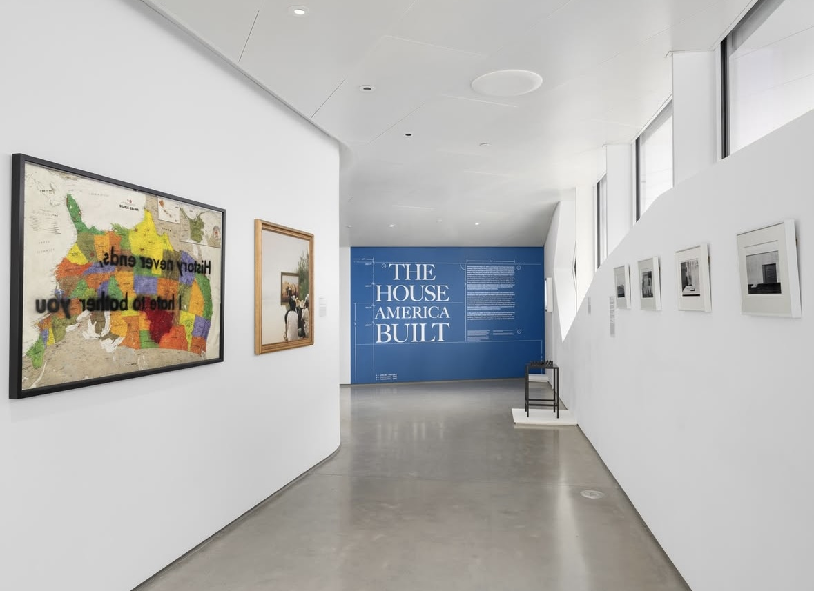
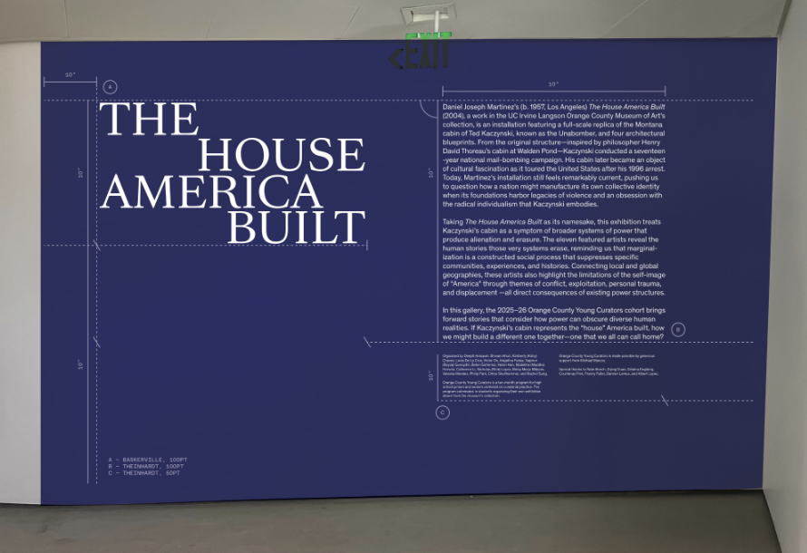
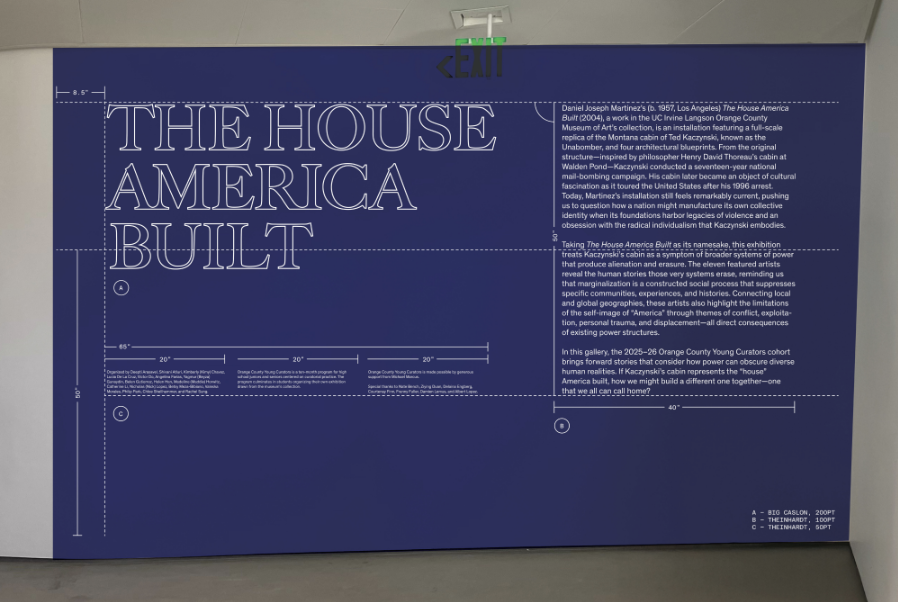
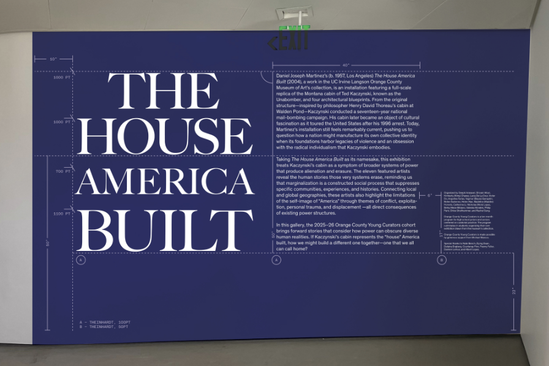
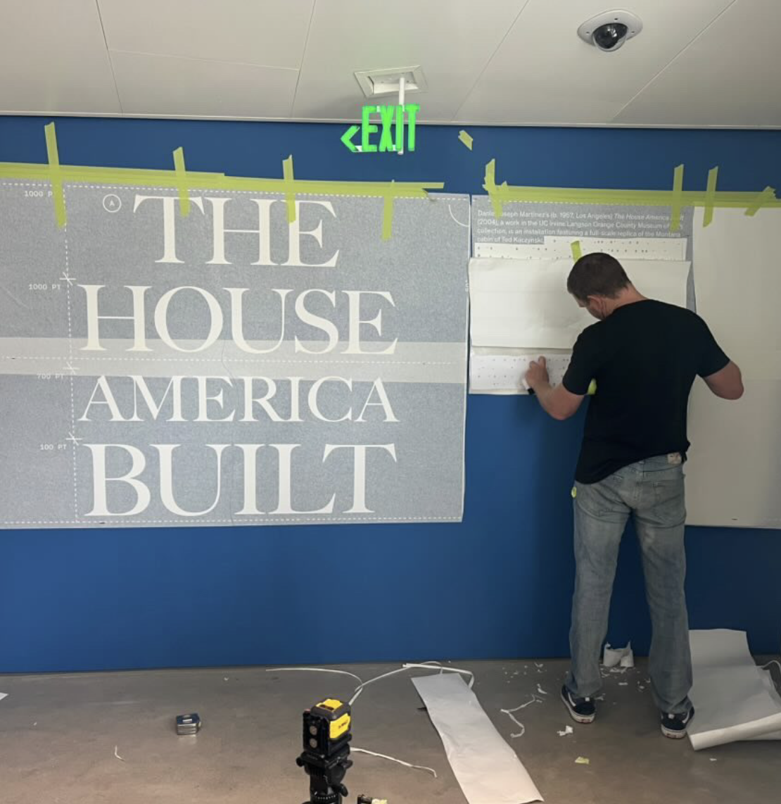

Curation
The House America Built · Orange County Museum of Art

The House America Built
Exhibition curation · Title-wall designI helped organize The House America Built at the Orange County Museum of Art with fellow student curators in the OCYC program and Courtenay Finn, the museum’s former chief curator. Our work included exhibition design and writing.
The exhibition takes its name from Daniel Joseph Martinez’s installation, which recreates Ted Kaczynski’s cabin. It considers how artists challenge systems of power that erase individual stories. I led the title-wall design, fitting the exhibition title, interpretive text, and credits onto one gallery-scale wall.
Title-wall studies
Three layouts; the second option became the final direction.





In the gallery
The final wall introduced visitors to the exhibition. I also gave tours, discussing the work with people in the gallery.